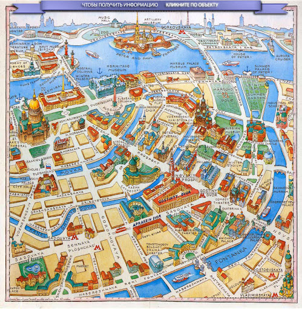

This is the content of my first blog post.
Интерактивная карта центральных районов Санкт-Петербурга.
Можно кликнуть на Исакиевский собор, Петропавловскую крепость, Спас на Крови, Казанский собор и Александровскую колонну

← Back to Home